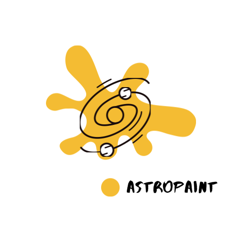
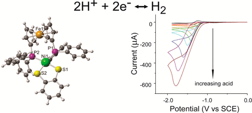

About Me
I'm Shobeir Seddington, a passionate data science professional with a strong focus on the healthcare and tech industries.
Currently, I'm the Director of Data Science and Personalization at CVS Health. I've held some pretty cool roles, like being a Principal Data Scientist at Gopuff and working in various positions at Aetna, a CVS Health Company.
In addition to my work in the industry, I've had the opportunity to be an Advisor for Harvard Business Review. Throughout my career, I've loved leading teams, optimizing processes, and using cutting-edge data analytics techniques to make a real impact.
Feel free to reach out if you want to chat about data science, healthcare, or anything else!
Select Publications
 Google Scholar: Google Scholar
Google Scholar: Google Scholar-

AstroPaint: A Python Package for Painting Halo Catalogs into Celestial Maps
AstroPaint is a Python package designed to generate and visualize sky maps of various astrophysical signals from dark matter halos and their host gas. It produces whole-sky mock maps at desired resolutions using input halo catalogs and astrophysical effect profiles. With its Object-Oriented, parallel design, AstroPaint offers tools for catalog filtering, map manipulation, and cutout stacking, allowing easy scalability for high-resolution maps and large catalogs. Although primarily developed for galaxy cluster signals, its applications extend to halos of any size or point sources.
-

A Nickel Phosphine Complex as a Fast and Efficient Hydrogen Production Catalyst
The research focuses on creating a cost-effective and environmentally friendly alternative to traditional noble-metal-based catalysts. The nickel phosphine complex exhibits fast and efficient catalytic activity for hydrogen production, demonstrating its potential as a promising alternative in sustainable energy applications. The study highlights the importance of exploring non-noble metal-based catalysts for hydrogen production, paving the way for more sustainable and economical energy solutions.
-
 Polarizability as a Molecular Descriptor for Conductance in Organic Molecular Circuits
Polarizability as a Molecular Descriptor for Conductance in Organic Molecular CircuitsThis study explores the connection between molecular polarizability and conductance in electrified molecular interfaces. Results show that for a family of structurally connected molecules, conductance decreases as polarizability increases. This supports the idea that a molecule in a junction acts as a dielectric, polarized by the applied bias, creating a barrier that hinders tunneling. Using polarizability as a descriptor offers advantages over a molecular orbitals-based picture. The research uses Simmons' tunneling model, incorporating image charge and dielectric effects, to represent the molecular junction. Despite its simplicity, this model reveals a previously overlooked connection and encourages further investigation.
Contact Information
 Email: shobmaz@gmail.com
Email: shobmaz@gmail.com
 LinkedIn: www.linkedin.com/in/shobeir-seddington
LinkedIn: www.linkedin.com/in/shobeir-seddington
 GitHub: github.com/S-KSM
GitHub: github.com/S-KSM